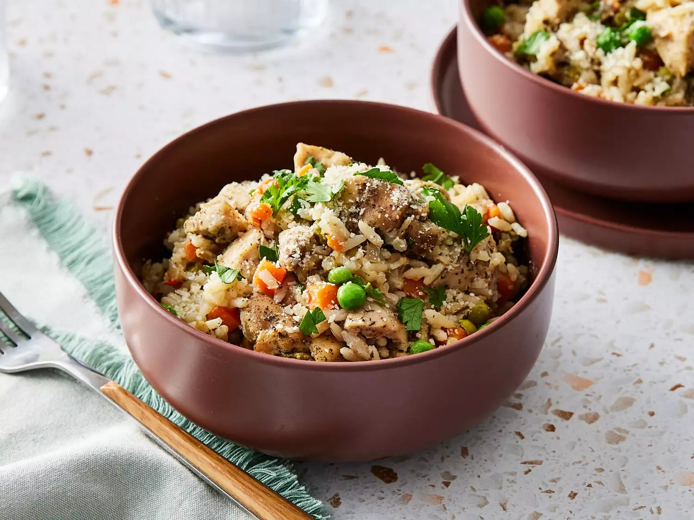

Chicken Rice

This easy slow cooker chicken and rice dish comes together in minutes and the slow cooker does the rest. Make sure you use converted rice, otherwise it gets mushy and don't skip the Parmesan cheese
ingredients
- 2 cup of chicken broth
- 1 cup rice
- 1 onion
- 1 tablespoon dijon mustard
- 1 teaspoon dried thyme
- 1.5 pound of skinless boneless chicken
- 10 ounce frozen peas and carrot
- salt and pepper
- 0.5 cup grated parmesan cheese
steps
- In a 3 1/2- to 4-quarts slow cooker stir together broth, rice, onion, mustard and thyme. Add frozen peas and carrots. Season chicken thighs with salt and pepper
- add chicken into the slow cooker, stir to mix
- Cover and cook on low for 5 to 5 1/2 hours until chicken and rice are cooked through
- Top with Parmesan cheese and parsley before serving